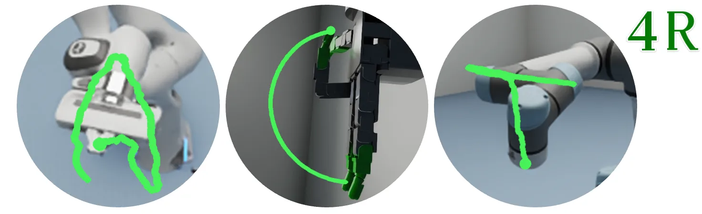
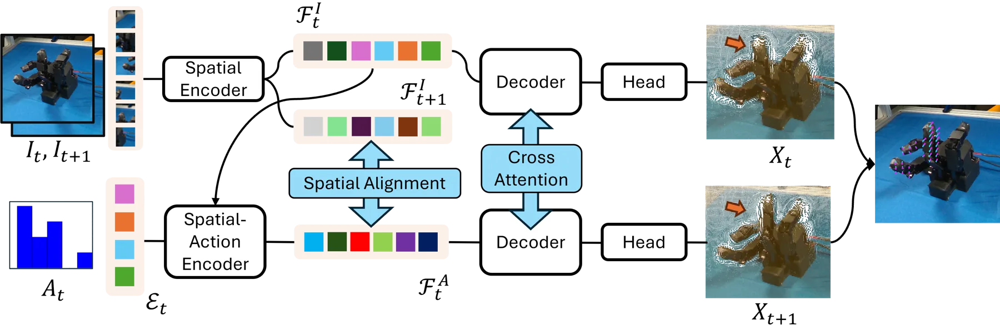
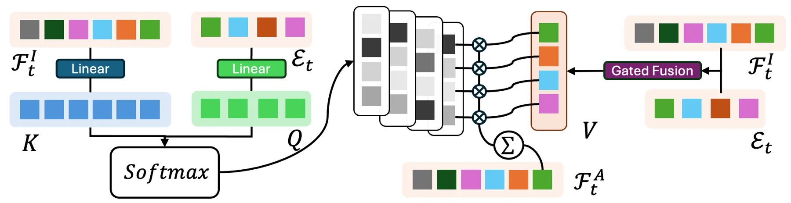
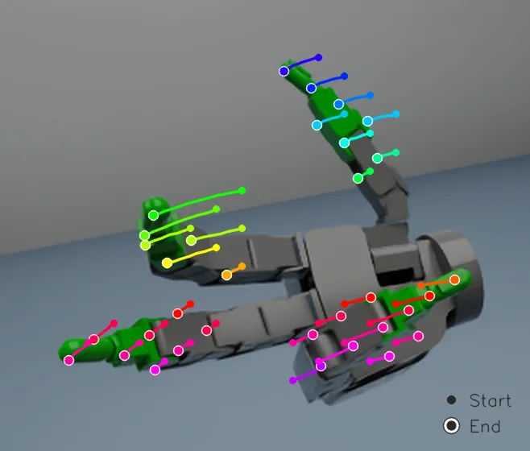

Act4R：用动作条件化的 4D 重建做「无运动学」机器人控制
Act4R: Action-conditioned 4D reconstruction for kinematics-free control
基于 4D 重建骨干 St4RTrack，把 3D VFM 解码器的「目标图像 token」替换为动作向量：动作经 MLP 变成 action embedding 作为 Query，图像 patch 特征作为 Key，Value 用地道门控做图像 token 与动作上下文的通道级融合，第二层再互换 Query/Key 以对齐长度，得到动作空间嵌入；训练期把该嵌入对齐到未来帧的空间嵌入（L_feat 平方误差），并叠加用 CoTracker 提升到 3D 的场景流损失（含尺度对齐）、2D 轨迹损失、深度与一致性损失；逆控制则冻结网络、用 Adam 优化动作向量去最小化与期望 2D/3D 流的误差。结果：7 个平台平均 3D 流误差 5.500 mm（NJF 17.748 mm）；2D 轨迹逆控制动作余弦相似度 Allegro 0.679 vs NJF 0.269；去掉 3D 流损失后变体在 3D 逆控制上完全失败（0.085）。
mean 3D flow error
action cosine similarity
ablated (no 3D flow loss) flow error
3D inverse-control accuracy without flow loss
作者、单位与技术谱系 · Research context
作者与单位
研究脉络
- St4RTrack 与 3D VFM（DUSt3R/MASt3R 系）方法基座关系：Act4R 直接以 St4RTrack（基于 3D VFM 的 4D 重建工作）作为基础模型，并沿用 3D VFM 的「空间编码器 + 解码器」结构与点图回归监督。[官方 HTML 全文（第 3.1、4.1 节）]
- NJF（Neural Jacobian Fields）方法上游（主要对照）关系：NJF 用神经场直接从控制信号学机器人运动，需要把整个空间体素化并从头优化；Act4R 用 3D VFM 的空间先验替代这一路线，并在所有平台上优于它。[官方 HTML 全文（第 4.2–4.3 节、表 1/2）]
- CoTracker 与 IsaacSim方法上游关系：训练监督中的 2D 点跟踪与 3D 提升依赖 CoTracker 的伪真值；仿真数据在 IsaacSim 中采集，构成本篇的数据与监督来源。[官方 HTML 全文（第 3.4、4.1 节）]
合作网络
- JHU–UVA 跨机构共同署名Johns Hopkins University（ECE） → University of Virginia（Data Science）关系：共同署名 / 跨机构[arXiv 官方 HTML（首页作者与单位）]
- 对 St4RTrack / CoTracker / IsaacSim 的技术依赖Act4R → St4RTrack（基础模型）、CoTracker（伪真值跟踪）、IsaacSim（仿真数据）关系：官方模型/工具依赖（明确技术依赖）[官方 HTML 全文（第 3.4、4.1 节）]
- 数据集依赖Act4R 评测 → Li et al. (2025) 发布的机器人平台数据集关系：数据集依赖[官方 HTML 全文（第 4.1 节）]
- 代码发布状态（待核验）Act4R → 公开代码/项目页关系：未发现公开代码入口（待核验）[arXiv 官方 HTML（全文与页脚）]
作者与单位来自论文首页署名（论文报告的事实）；「基座/上游」定位来自论文正文明确表述（基于来源的解读）；论文未披露导师/指导关系，故不写师生边；代码可用性按抓取所见记录。
方法本质拆解 · What actually changed
是不是微调？——继续微调，但按形态分别训练，且冻结部分编码器
不是从头训练，也不是纯测试时算法：Act4R 从 4D 重建骨干 St4RTrack 初始化，并先用图像对微调出一个 oracle 版本的 3D VFM 作为 SAE 的初始化；随后训练 SAE 与解码器（空间编码器被冻结以保护预训练空间先验），每个机器人形态单独训练 10 epoch、约 16 小时、4×RTX A40。因此权重确实会变，但改变的是动作编码与解码路径；跨形态没有共享一套权重，而是逐机型一份。
有没有额外约束？——把动作接入空间嵌入，并用对齐与尺度约束锁住语义
约束作用在「动作嵌入 F_t^A」这一变量上。它被 L_feat=‖F_t^A − F_{t+1}^I‖² 强制对齐到未来帧的空间嵌入；Value 侧用逐 patch 门控 V=(1−g)⊙F_t^I + g⊙ℰ̃_t 融合两模态，第二层交换 Query/Key 以对齐 token 长度；监督信号叠加了尺度对齐后的 3D 场景流损失（s_flow）、2D 轨迹损失（围绕图像中心按 s_traj 重缩放）、深度损失与一致性损失。约束的意图是让动作进入一个「物理上有意义」的 3D 流形，而不是自由学习的隐空间。
推理/后端到底做了什么？——一次前向预测 + 逆控制的输入优化
正向推理只需 I_t 与 A_t（推理时不使用 I_{t+1}），一次前向即得到当前与未来点图及 3D 场景流。逆控制则冻结全部网络参数，把动作向量当优化变量，用 Adam 最小化预测流与期望 2D/3D 流的 L2 误差——这是一个「优化输入而非参数」的后端。全程没有因子图、全局 BA 或额外几何后端；机器人运动学模型也没有被显式引入。
方法本质是什么？——把动作解释成对未来空间嵌入的位移
本质是把「动作」重新定义为「未来 3D 状态的空间嵌入」，从而让一个已在大规模图像对上预训练的空间解码器可以直接消费控制信号，无需为每个机器人重建运动学。它改变的是解码器的输入模态（第二图像 → 动作嵌入）与动作部分的权重；明确没有做的是：没有建立关节级运动学模型、没有跨形态共享参数、也没有在真机上做闭环控制验证（闭环只在仿真）。
输入/先验 = 当前 2D 观测 I_t + 动作信号 A_t + 从 3D VFM（St4RTrack 系）继承并微调的空间编码器/解码器；改变的位置 = 解码器的「第二模态输入」（由未来图像换成动作空间嵌入 F_t^A）及其编码路径；约束或合并动作 = 动作嵌入对齐未来帧空间嵌入（L_feat）+ 逐 patch 门控的通道级融合 + 尺度对齐的 3D 场景流/2D 轨迹/深度/一致性监督；直接效果 = 7 平台平均 3D 流误差 5.500 mm（NJF 17.748），Allegro 逆控制动作余弦 0.679（NJF 0.269）。

动机与问题Motivation
动机与问题
复杂机器人（灵巧手、软体气动手、多关节臂）的运动学建模成本高：需要专用传感器、逐机型标定与人工标注，换一个形态就要重做一次。论文提出的替代思路是「用 4D 表示学习把动作与空间运动直接关联」，即问：能否从 2D 观测提升出 4D 特征，并按动作信号稠密地映射机器人表面运动。这带来两个具体问题：其一，动作与图像是两种模态，如何在一个已在大规模图像对上预训练的空间解码器里融合它们而不破坏其空间先验；其二，如何在没有大量 3D 真值的情况下监督「动作→未来状态」，以及如何反过来从期望流求动作（逆控制）。
方法Method
方法总览
形式化上，3D VFM 把图像对映射为点图 f_θ(I_i, I_j)={X_i, X_j}，并分为空间编码器与解码器。Act4R 保留该结构，但把目标图像换成一个动作嵌入：f_enc(I_t)=F_t^I（图像空间嵌入），f_enc^SAE(A_t, F_t^I)=F_t^A（动作空间嵌入），解码器 f_dec(F_t^I, F_t^A)={X_t, X_{t+1}}。训练分三部分：先用图像对微调出「oracle」版本的 VFM，作为 SAE 初始化并冻结其空间编码器；再用 L_feat=‖F_t^A − F_{t+1}^I‖² 让动作嵌入对齐未来帧的空间嵌入；最后端到端地在稠密重建与跟踪监督下训练解码器（场景流、2D 轨迹、深度、一致性）。逆控制阶段冻结网络，构造期望的 2D 或 3D 流 S_tgt，用 Adam 优化 A_t 使预测流与之匹配。
关键技术细节
SAE 的融合方式是与常规 cross-attention 不同的：常规做法 Value 只来自单一模态，而这里动作 embedding ℰ_t 与图像 token F_t^I 都携带关于未来状态的空间信息，因此 Value 用逐 patch 门控做通道级融合 V=(1−g)⊙F_t^I + g⊙ℰ̃_t，门控 g=σ(MLP([F_t^I; ℰ̃_t])) 由两者共同决定（动作 token 先在 M 个关节上取平均再广播到 N 个 patch）。第一层以图像为 Query、动作为 Key；第二层交换 Query/Key 以对齐长度。由于基础模型尺度不确定，场景流与轨迹损失都先做尺度对齐：s_flow=Σ⟨X_t, X_t^gt⟩/Σ‖X_t‖²，轨迹损失则围绕图像中心做 s_traj 重缩放后再算 L2。论文明确写这条对齐损失是为了避免「冷启动式端到端训练」对预训练权重造成灾难性干扰。

实验Experiments
实验设置
数据与规模：真实数据用 Li et al. (2025) 发布的机器人平台数据集，覆盖 4 个真实形态——Allegro 四指手、HSA 螺旋驱动器腿、3D 打印气动手、低成本多关节教育机械臂；仿真在 IsaacSim 中另建 3 个形态——Franka、Allegro 手、UR5e。每个平台含数百条动作序列、每条 8–10 帧多视角 RGB 与深度，深度真值来自专用传感器（真实）或环境真值（仿真）；90% 作训练/验证、其余测试。指标：主指标是 3D 流误差（mm，仅统计真值有位移的像素），逆控制用动作余弦相似度（方向正确性）与 ℓ2 幅度误差（附录）。对照与消融：NJF（神经雅可比场，训练 32 小时）为主要基线；消融含 Act4R_NSA（去掉空间对齐）、Act4R_N3D（去掉 3D 流损失）、Act4R_Gr00t（用 Gr00t 式只对动作自注意力的编码器）、Act4R_VGGT（用 VGGT 估计深度替代真值深度）。训练：4×NVIDIA RTX A40，逐机型 10 epoch、约 16 小时。
实验数字与比较
3D 流误差（来源：论文表 1，mm，越低越好）：Act4R 平均 5.500，对照 NJF 17.748；逐平台：Allegro 6.715 vs 11.607、HSA 5.136 vs 7.420、Toy Arm 6.820 vs 9.398、Pneumatic 4.603 vs 10.744、Allegro Sim 3.765 vs 17.666、Franka Sim 6.675 vs 35.155、UR5e Sim 4.787 vs 32.246。消融同一表：去掉空间对齐 NSA 平均 7.051，去掉 3D 流损失 N3D 平均 69.979，Gr00t 式动作编码器 9.688——即空间–动作融合与 3D 流损失各自都关键。逆控制（来源：论文表 2，动作余弦相似度，越高越好）：Allegro 0.679（NJF 0.269）、HSA 0.493（0.290）、Toy Arm 0.536（0.273）、Pneumatic 0.376（0.243）。论文还报告：2D 轨迹逆控制下 N3D 平均掉到 0.115（Allegro Sim）等，而 3D 轨迹逆控制下 N3D 完全失败、平均仅 0.085。
消融/失败边界
消融结论（来源：论文表 1/2 与第 4.2–4.3 节）：去掉空间对齐（NSA）在 7 个平台上普遍变差（平均 5.500→7.051）；换成 Gr00t 式「只对动作自注意力、无空间上下文」的编码器明显更差（5.500→9.688），说明把动作与空间嵌入融合在 SAE 内是有效的；去掉 3D 流损失（N3D）在流预测上崩到 69.979，并在 3D 轨迹逆控制上完全失败（0.085 平均），是本文最明确的失败边界——即没有 3D 流监督，动作嵌入无法承载 3D 位移语义。另一个边界是深度来源：用 VGGT 估计深度替代真值深度（Act4R_VGGT）整体略差（如 3D 逆控制劣于 Act4R），作者归因于深度估计不一致在优化中引入噪声。
局限与迁移Limitations & Transfer
局限与待核验
作者在结论与「AI use statement」处给出的限制偏向方法边界：模型需要按机器人形态分别训练（每个平台单独训练约 16 小时），并未证明跨形态零样本迁移；逆控制依赖可微优化与期望流的构造。我们的待核验项：(a) 抓取时未发现公开代码仓库或项目页，代码可达性与端到端复现属待核验；(b) 真实数据沿用 Li et al. (2025) 发布的采集，动作空间的定义（每帧的 configuration 差分、归一化到 [−1,1]）在不同机型间的可比性由原文重述给出，但原始标注协议未在正文展开；(c) 消融表中的 Act4R_NSA 在 UR5e Sim 上从 4.787 变到 11.295（变化远大于其他平台），论文未给出该异常的单独解释；(d) 闭环控制只在仿真中评测，真实平台仅做流预测与逆控制精度评测，真机闭环稳定性无法由原文确认。
与你研究路线的关系
可迁移点有三。第一，「把动作当成解码器的第二个模态输入，并用对齐损失约束到未来帧的空间嵌入」是一个不破坏预训练空间先验的融合配方，可类比你在多源融合里给「运动模型的输入」与「观测嵌入」做通道级门控融合，而不是简单拼接。第二，尺度对齐（s_flow、s_traj）是处理「基础模型输出无公制尺度」的实用手段，与 UniMetric 的整段尺度恢复互补：前者在训练损失内做局部对齐，后者在推理时给全局标量。第三，「冻结网络、优化输入信号」的逆控制范式，可迁移到你需要在给定目标状态反解控制量/传感器的场景。下一步实验建议：(a) 在你的平台上做「有/无 3D 流损失」的最小对照，复现 69.979 vs 5.500 这种量级差异以确认监督信号的必要性；(b) 把动作嵌入换成你的控制量（速度/轮速），检验同一 SAE 结构是否仍成立；(c) 若要用于真机，先补闭环实验，因为论文只在仿真中做闭环。



